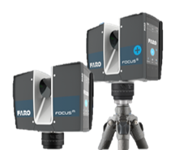

SCENE Software
여러 위치에서 취득한 3D 스캔 데이터를 하나의 공간 데이터로 정합하고 관리하는 소프트웨어
포인트 클라우드 정합, 시각화, 품질 확인 및 데이터 관리를 지원합니다.
자세히 보기 →현장의 공간 정보를 3D 스캔 데이터로 전환하고 실무에 연결하는 Reality Capture 솔루션
산업용 3D 레이저 스캐너로 넓은 현장과 복잡한 구조물을 빠르게 스캔하여 정확한 3D 공간 데이터를 취득합니다.

장거리 고정밀 3D 레이저 스캐닝을 위한 Reality Capture Solution
취득한 스캔 데이터를 정합, 관리, 모델링, 검토 업무로 확장합니다.
여러 위치에서 취득한 3D 스캔 데이터를 하나의 공간 데이터로 정합하고 관리하는 소프트웨어
포인트 클라우드 정합, 시각화, 품질 확인 및 데이터 관리를 지원합니다.
자세히 보기 →3D 스캔 데이터를 CAD·BIM 기반의 도면과 현황 모델로 전환하는 소프트웨어
기존 건축물과 설비의 현황 모델링, 도면 작성 및 설계 검토 업무를 지원합니다.
자세히 보기 →스캔 데이터와 설계 데이터를 비교하여 시공 상태와 품질을 검토하는 소프트웨어
공정 진행 확인, 시공 편차 분석 및 현장 품질 관리 업무에 활용합니다.
자세히 보기 →CAD 기반 작업 정보를 실제 작업면에 레이저로 투영해 조립과 배치 작업을 안내하는 소프트웨어
템플릿, 부품 위치, 조립 기준선을 작업면에 직접 표시하여 수작업 레이아웃을 줄이고 작업 정확도를 높이는 데 활용합니다.
자세히 보기 →Focus Premium Max로 취득한 현장 데이터는 정합, 모델링, 시공 검토 단계까지 하나의 워크플로우로 연결됩니다.
현장 3D 스캔 데이터 취득
포인트 클라우드 정합 및 관리
03CAD·BIM 기반 현황 모델링
04시공 상태 비교 및 품질 검토